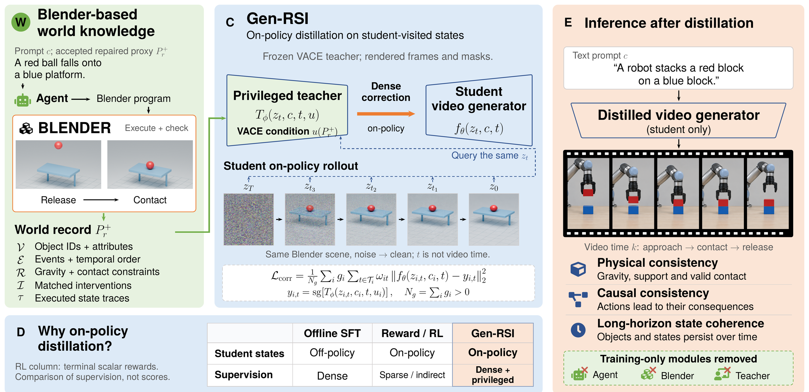

Physics evaluated in a simulator, corrections delivered at the student's own denoising states.
Click to jump to each section.

@inproceedings{genrsi2027,
title = {Gen-RSI: Recursive Self-Improvement of Video Generators through World Proxies},
author = {Anonymous Authors},
booktitle = {International Conference on Learning Representations (ICLR)},
year = {2027},
note = {Under review}
}